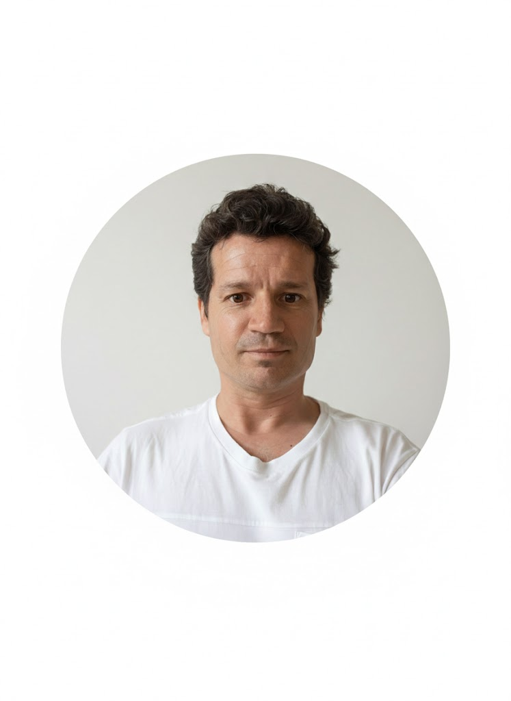
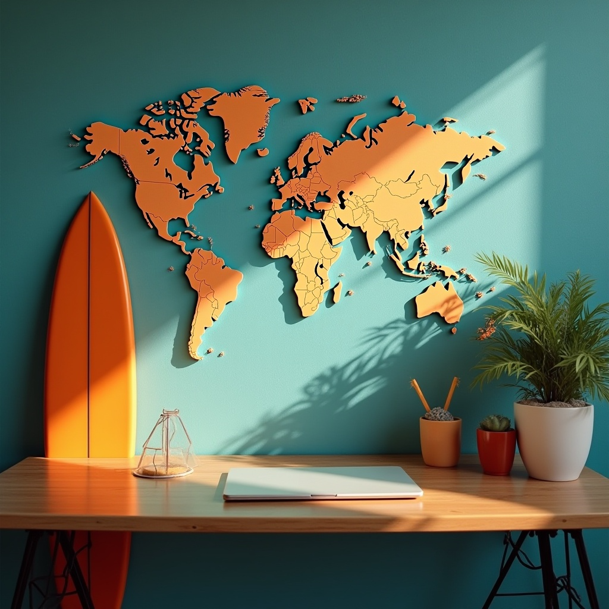
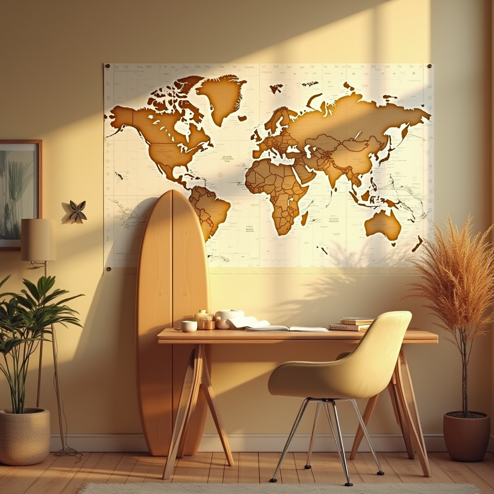

Inicio
Explorar
Crear
Busca imagenes
Enviar

Tu cuenta
Edita tu perfil
Cierra sesión
Feed
Idea de escritorio clasico

Idea escritorio natural

Idea de escritorio fururista
Explora las categorias
Minimalismo
Animales
Surfing
Haz tus propias creaciones
Titulo
Descripción
Subir imagen